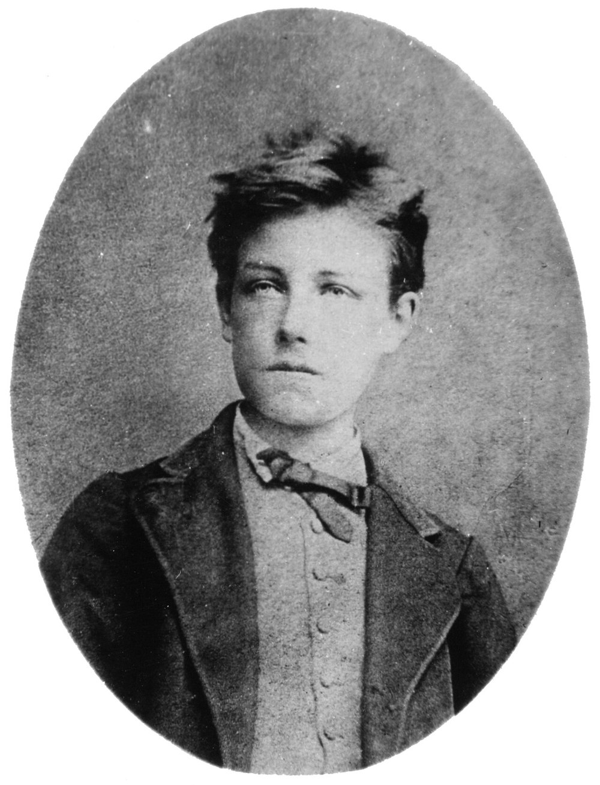

Thursday · Literature
(c. 1857–1898): Correspondence, suggestion, and the music of verse
From 's (1857, revised 1861 after prosecution) through the careers of , 's brief lightning strike, and 's austere late work, French poets made suggestion, musicality, and symbolic correspondence into a new literary program. is both a movement label the poets partly accepted (Symbolist manifestos appeared in the 1880s) and a later critical term. The era runs roughly from 's trial in 1857 through 's death in 1898, overlapping with Decadent prose, in Paris salons, and the (, La Revue blanche) that made a public conversation.


The label was proposed by in 1886 and defended in his manifesto that year. died in 1867 before the term existed; and were ambivalent about the label even as they were named its central figures. The poets canonized as Symbolists are almost all men; women such as , , and Marceline Desbordes-Valmore were active but marginalized in early anthologies and later canonization. The elsewhere section compares to contemporaneous movements abroad — Latin American Modernismo, English Aestheticism, early Russian , and Japanese shintaishi — but these movements had their own histories and concerns; they were not copies of the French model.
Select any words, or tap a dotted term.
- 1857 Les Fleurs du mal published; prosecution publishes () with Poulet-Malassis in June 1857. The volume contains 100 poems in five sections exploring beauty, decay, (), and correspondence between the physical and spiritual. In August the book is prosecuted for offenses against public morality; on 20 August the court fines 300 francs and his publishers (Poulet-Malassis and de Broise) 100 francs each, and six poems are banned from future French editions. 's theory of (synesthetic links between senses, colors, sounds, and spiritual states) anchors later Symbolist aesthetics.
- 1861 Fleurs du mal second edition; Baudelaire's criticism publishes the revised and expanded second edition of (now 126 poems in six sections, with the six condemned poems removed and a new section Tableaux parisiens added). His prose poems Le de Paris (Paris ) circulate in journals. His critical essays on art (Salons), (whose tales he translated into French 1856–65), and Wagner's Tannhäuser (1861 Paris premiere) theorize imagination, suggestion, and the refusal of didactic purpose.
- 1866–67 Baudelaire's illness and death; Parnassian anthologies suffers a stroke in Brussels in March 1866 that leaves him paralysed and unable to speak. He is brought back to Paris and dies on 31 August 1867, aged forty-six. Meanwhile, the first contemporain anthology (1866) collects verse by Théodore de Banville, , Leconte de Lisle, and others — formal precision and that will be adjacent to but distinct from . 's first collection Poèmes saturniens appears in 1866.
- 1871–73 Verlaine and Rimbaud; Paris Commune aftermath (born 1844), married with a son, meets the teenage (born 1854) in September 1871. 's letters and early poems ( / ) show visionary intensity and formal violence. The two poets travel together to London and Brussels; their relationship is turbulent and scandalous. In July 1873 shoots in the wrist during a quarrel in Brussels; is imprisoned. writes (, 1873) and (prose poems, composed c. 1872–75). By about 1875, at age twenty, has largely abandoned poetry and will spend the rest of his short life in trade and travel.
- 1874–76 Mallarmé's early work; Symbolist painting emerges (born 1842), an English teacher in Paris, publishes () in 1876 — a dense, musical eclogue that becomes a Symbolist touchstone. 's Symbolist paintings (Salome, The Apparition) debut at the Salon; begins his noirs (charcoal drawings). Visual and poetic develop in parallel, linked by shared themes of dream, myth, and interiority.
- 1884–86 À rebours; Symbolist manifestos and magazines publishes ( / , 1884) — a Decadent novel about Des Esseintes, an aristocrat who retreats into aesthetic solitude, cataloging perfumes, jewels, and esoteric books. The novel makes and into cult figures and bridges and . In 1885 launches, debating Wagner's influence on French poetry. publishes the Symbolist Manifesto in Le Figaro (18 September 1886), defending the name and naming as the movement's true precursor, saying endowed it with a sense of mystery and the ineffable, and saying broke the shackles of verse.
- 1886–91 Rimbaud's death; little magazines flourish , who had left poetry behind and worked in Aden and Harar as a trader (coffee, and arms in the 1880s), falls ill with a tumor in his knee. He returns to France for surgery (leg amputation) and dies in Marseille in November 1891 at age thirty-seven. was first published in the magazine La Vogue in five instalments, 13 May–21 June 1886, then in a volume with a short preface by in autumn 1886. was in Aden, was not informed, and never saw it. Meanwhile, Symbolist proliferate: La Revue indépendante, La Vogue, Mercure de France. publishes critical portraits of Les Poètes maudits (The Accursed Poets): the 1884 edition covered Tristan Corbière, , and ; the expanded 1888 edition added Marceline Desbordes-Valmore, Villiers de l'Isle-Adam, and himself (as 'Pauvre Lélian').
- 1893–97 Vers libre codified; Mallarmé's late work () — irregular line lengths, broken alexandrines, and flexible rhythm — becomes the dominant Symbolist form through practice and debate. and others claim to have invented it; the reality is gradual experimentation by many poets. 's (): a first version appears in the magazine Cosmopolis in May 1897 in conventional layout; the radical typography intended — words scattered across double-page spreads, white space as structural silence — is published in book form in 1914, after his death. 's Tuesday evening salons () at his rue de Rome apartment gather younger poets; the gatherings are small but influential.
- 1896–98 Verlaine and Mallarmé die; era closes dies in January 1896 at age fifty-one, impoverished and alcoholic but recognized as a major poet. dies in September 1898 at age fifty-six. With dead since 1891 and since 1867, the first-generation Symbolists are gone. Younger poets (Paul Valéry, Francis Jammes) and new movements (early Modernism, proto-Surrealism) begin to eclipse as a living program, though its influence on twentieth-century poetry is pervasive.
Before
Romantic aftermath, Parnassian l'art pour l'art, and Baudelaire's Paris
French poetry in the 1850s was still negotiating Romanticism's legacy. Victor Hugo was in political exile but towering; Alfred de Musset and Alphonse de Lamartine were still alive but their moment had passed. The — , Leconte de Lisle, Théodore de Banville — advocated (), formal precision, and impersonal objectivity as an answer to Romantic effusion. 's 1835 preface to Mademoiselle de Maupin had declared that art serves no moral or social purpose; only beauty matters. This doctrine — art refuses to be useful — was a starting premise for , though Symbolists would take it in more esoteric directions.
(1821–1867) arrived in this context. Born to a bourgeois Paris family, he inherited money at twenty-one, spent it quickly, and lived the rest of his life in debt, writing criticism, translating , and composing poems. He frequented Haussmann's modernizing Paris: boulevards, cafés, prostitutes, crowds, flânerie (aimless urban walking). He also read Swedenborg, occult theory, and Romantic correspondence doctrines about hidden links between material and spiritual worlds. His poetry combined both: urban decay and mystical aspiration, () and the ideal.

In June 1857 published () with the publisher Poulet-Malassis. The volume contained 100 poems organized into five sections: et Idéal ( and the Ideal), Le Vin (Wine), (Flowers of Evil, the section), Révolte (Revolt), and La Mort (Death). The poems explored beauty in decay, eroticism, urban misery, and mystical correspondence. In August the book was prosecuted for offenses against public morality and religion. On 20 August 1857 the court fined 300 francs and his publishers (Poulet-Malassis and de Broise) 100 francs each; six poems were ordered removed from future French editions. The trial made the book famous. The scandal also clarified 's position: he was not a Realist documenting vice but an artist transmuting vice into beauty.
The era
1857 trial through Verlaine, Rimbaud, Mallarmé, and the 1886 manifesto
The revised second edition of appeared in 1861 with 126 poems (the six condemned poems removed, new poems added) now organized into six sections — a new section, Tableaux parisiens (Parisian Scenes), was added. 's theory of — articulated most clearly in the sonnet — became a foundation for later . The poem describes a forest of symbols where perfumes, colors, and sounds answer each other, and where nature is a temple whose living pillars sometimes utter confused words. This synesthetic mysticism — the idea that the senses correspond to each other and to spiritual truths — gave Symbolist poets a program: evoke rather than describe; suggest rather than state; make poetry musical and hermetic.
suffered a stroke in 1866 that left him paralysed and unable to speak, and died in Paris on 31 August 1867, aged forty-six. He never called himself a Symbolist — the term did not yet exist — but his , rejection of didacticism, and cult of pure beauty made him the movement's acknowledged precursor. Meanwhile (born 1844) had published his first collection Poèmes saturniens in 1866. 's early work showed Parnassian influence but with a new melancholy and musicality. His Fêtes galantes (1869) evoked Watteau's Rococo paintings in verse; his Art poétique (written 1874, first published 1882 in the review Paris moderne, collected in Jadis et naguère 1884) would later codify the Symbolist aesthetic: De la musique avant toute chose (Music before everything), take eloquence and wring its neck.
In September 1871 , married with a young son, met (born 1854), a teenage poet from Charleville who had sent him letters and poems. 's early work was visionary, violent, and technically astonishing. His long poem (, 1871) narrated a boat's hallucinatory journey through seas and rivers without a crew; the boat spoke of storms, colors, drowned men, and impossible freedoms. recognized genius. The two began a relationship that was intense, public, scandalous, and destructive. They lived together in Paris and London, drank, fought, and wrote. In July 1873, during a quarrel in Brussels, shot in the wrist with a revolver. was arrested and imprisoned for two years. The relationship ended.
wrote () in 1873, a visionary prose-poem autobiography exploring spiritual crisis, the failure of his poetic alchemy, and the renunciation of literature. He printed the book at his own expense; most copies remained unbound in the printer's warehouse. Around the same time he composed the prose poems later collected as (c. 1872–75). By about 1875, at age twenty, had largely stopped writing. He spent the rest of his short life learning languages, traveling, enlisting in armies and deserting, working in Cyprus and Africa as a trader. was first published in the magazine La Vogue in five instalments, 13 May–21 June 1886, then in a volume of about 200 copies in autumn 1886 with a short preface by . was in Aden (Yemen) trading, was not informed, and never saw it. He returned to France in 1891 only because of cancer in his knee and died in Marseille in November 1891 at age thirty-seven. The legend of the boy-poet who renounced literature for real life is as central to his afterlife as the poems themselves.


While was abandoning poetry, (born 1842) was refining it into something hermetic and austere. worked as an English teacher in Paris lycées; he wrote slowly, publishing little. His 1876 eclogue () appeared in a limited edition: a faun wakes from a dream of nymphs, unsure if the encounter was real or imagined. The poem is dense, syntactically difficult, musical, and ambiguous. Claude Debussy's 1894 orchestral Prélude à made the poem famous outside literary circles and linked Symbolist poetry to musical Impressionism. 's ideal was the Book (le Livre): a total, self-enclosed work of art that would be architecture, music, and myth simultaneously. He never completed it, but his late work () approached it: a first version appeared in the magazine Cosmopolis in May 1897 in conventional layout; the radical typography intended — words scattered across double-page spreads, white space as structural silence — was published in book form in 1914, after his death.
In the 1880s the consolidated into a named program. proliferated: La Revue indépendante, La Vogue, Mercure de France, La Plume. Poets debated prosody: should they break the alexandrine (the twelve-syllable line that had dominated French verse since the seventeenth century)? Should they write () with irregular line lengths and no fixed meter? and experimented; 's younger generation took as liberation. In September 1886 published manifesto in Le Figaro (18 September 1886), defending the name — which he had proposed earlier that year — and naming as the movement's true precursor, saying endowed it with a sense of mystery and the ineffable, and saying broke the shackles of verse. The label stuck, though himself was ambivalent and preferred the term Decadent for a time.
How it showed up
Poems, prose-poems, salons, little magazines — and three voices to read slowly
shows up on the page as lyric poems, prose-poems, manifestos, critical essays, and one extraordinary experimental text (). It also shows up as social infrastructure: 's Tuesday salons () at his rue de Rome apartment, where Paul Valéry, André Gide, Oscar Wilde, and others gathered to hear talk; the that serialized poems and manifestos; the cafés where drank and held court. Symbolist poetry is not one style: 's urban mysticism, 's hallucinatory violence, 's musicality, and 's syntactic density are distinct. What links them is the refusal of direct statement, the priority of suggestion and musicality, and the symbol as a means to evoke rather than describe.
Charles Baudelaire
1821–1867
's (1857, 1861) and prose-poems Le de Paris (published posthumously 1869) made him the Symbolist precursor. His — that perfumes, colors, sounds, and spiritual realities answer each other — gave later poets a program. His criticism on art (Salons), , and Wagner theorized imagination and the rejection of moral purpose. He suffered a stroke in 1866 that left him paralysed and unable to speak, and died in Paris on 31 August 1867, aged forty-six, before became a named movement.
Arthur Rimbaud
1854–1891
wrote , , and between about ages sixteen and twenty, then abandoned poetry and spent the rest of his life in trade and travel in Africa. His visionary intensity, formal violence, and renunciation of literature made him a Symbolist saint and Surrealist precursor. popularised the term accursed poet (poète maudit); the label fit perfectly. Died of cancer at thirty-seven.
Stéphane Mallarmé
1842–1898
's , , and austere late poems are the apex of Symbolist hermeticism. He published little but influenced many through his Tuesday salons. His ideal was poetry as music and architecture, the symbol as pure suggestion. Died of a throat spasm in 1898. Paul Valéry, who attended the , became one of his most prominent admirers and heirs.
(1844–1896) is the fourth essential voice. His Art poétique (written 1874, first published 1882 in the review Paris moderne, collected in Jadis et naguère 1884) is the Symbolist aesthetic in verse: take eloquence and wring its neck, music before everything, nuance over color. His Romances sans paroles (1874) are poems of melancholy musicality. He spent his later years impoverished, alcoholic, and recognized as a major poet. He wrote critical essays on Tristan Corbière, , and in Les Poètes maudits (1884); the expanded 1888 edition added Marceline Desbordes-Valmore, Villiers de l'Isle-Adam, and himself (as 'Pauvre Lélian'). popularised the term accursed poets for those who refused bourgeois success. 's generosity as critic and his willingness to name a Symbolist tradition helped make the movement public and collective.


The Decadent novel is the prose sibling of Symbolist poetry. 's (, 1884) follows Des Esseintes, an aristocrat who retreats from society into a house where he cultivates aesthetic obsessions: rare books (, ), perfumes, jewels, a tortoise whose shell he has gilded and encrusted with jewels, a 'mouth organ' of liqueurs. The novel is plotless but hugely influential: it made and into a public phenomenon. Oscar Wilde's The Picture of Dorian Gray (1890) is indebted to it. The overlap between and is real: both reject naturalism, moralism, and social engagement; both prize artifice, beauty, and exhaustion. The distinction is that is primarily poetic and primarily prose, though the boundary is porous.
Same time elsewhere
Latin American Modernismo, English Aestheticism, early Russian Symbolism, and Japanese shintaishi
was a French-language movement but it had contemporaneous parallels and reception abroad. In Latin America, Modernismo emerged in the 1880s–90s as a Spanish-language parallel: Nicaraguan poet Rubén Darío's Azul... (1888) and Prosas profanas (1896) adapted French Symbolist musicality and aestheticism to Spanish prosody. Darío first travelled to Paris in 1893, and his book of portraits Los raros (1896) includes essays on and . Modernismo was not imitation but translation: it addressed Latin American modernity through Symbolist formal techniques. Other Modernista poets included José Martí (Cuba), Manuel Gutiérrez Nájera (Mexico), and Julián del Casal (Cuba). The movement's chronology overlaps exactly.
In England the 1890s saw Aestheticism and the . Oscar Wilde's The Picture of Dorian Gray (1890) and his essays The Decay of Lying and The Critic as Artist argued for art's autonomy and artifice over nature. Arthur Symons's The in Literature (1899) — covering Nerval, , Villiers de l'Isle-Adam, , , , , , and Maeterlinck, dedicated to W. B. Yeats — introduced to English readers. T. S. Eliot read it in 1908, and Symons's translations and criticism shaped Anglo-American Modernism's reception of . The Yellow Book (1894–97) and The Savoy (1896) were publishing Decadent prose and verse by Ernest Dowson, Lionel Johnson, and others. English Aestheticism was adjacent to — translated as — but the two movements read each other late.
In Russia, early began in the 1890s, slightly later than France. Poets Valery Bryusov, Konstantin Balmont, and Dmitry Merezhkovsky translated and and adapted Symbolist aesthetics to Russian prosody. Bryusov's three 'Russian Symbolists' anthologies appeared in 1894–95. The journal Severny Vestnik (Northern Herald) published Symbolist verse and manifestos starting in the mid-1890s. Russian peaked in the 1900s–1910s with the second generation (Alexander Blok, Andrei Bely, Vyacheslav Ivanov), so it is better understood as influenced by rather than contemporaneous with 's 1857–98 core. Still, the 1890s overlap is real.
In Japan the Meiji era (1868–1912) saw poetic modernization experiments. Shintaishi (new-style poetry) emerged in the 1880s, breaking from traditional waka and haiku forms to write longer, free-form verse influenced by Western models. The anthology Shintaishishō (1882) was mostly translations of English poems with a few original poems. Mori Ōgai, who studied in Germany, was part of the group that produced the translation anthology Omokage (1889). The clearly French-Symbolist phase of Japanese poetry came later, with Ueda Bin's translation anthology Kaichōon (1905). The chronology is roughly contemporaneous (1880s–90s) but the influence was mediated by translation lag and local concerns.
After
Mallarmé's death, Modernist inheritance, and Surrealist claims
died in January 1896; in September 1898. With dead since 1867 and since 1891, the first Symbolist generation was gone by the turn of the century. Paul Valéry (1871–1945), who had attended 's , inherited the Symbolist legacy and extended it into the twentieth century with hermetic, philosophical verse (La Jeune Parque, 1917; Charmes, 1922). But Valéry was already a Modernist, not a late Symbolist: his work engages mathematics, psychology, and epistemology in ways would have recognized but extended.
's influence on Anglo-American Modernism was profound but delayed. Arthur Symons's The in Literature (1899) introduced Yeats, Eliot, Pound, and others to , , and . T. S. Eliot read 's ironic in the 1900s; it reshaped his early poems (The Love Song of J. Alfred Prufrock draws heavily on ). Pound's Imagism (c. 1912–14) owed debts to Symbolist juxtaposition and compression. Yeats's later poetry shows Symbolist influence filtered through occultism and Irish myth. The transmission was not direct imitation but a set of techniques: the symbol as evocation rather than allegory, musicality over statement, obscurity as virtue.


The Surrealists (1920s–30s) claimed as a precursor. André Breton's first Surrealist Manifesto (1924) praised 's visionary dérèglement de tous les sens (disordering of all the senses) and his renunciation of literature as a Surrealist act avant la lettre. the boy-prophet and the man who abandoned art for real life both fit Surrealism's revolutionary program. and were less useful to the Surrealists — too hermetic, too devoted to craft — but 's hallucinatory prose-poems in could be read as automatic writing before the fact.
By the mid-twentieth century was a teaching label as solid as Romanticism or Realism. University syllabi, anthologies, and criticism organized late nineteenth-century French poetry around , , , , and their heirs. The movement's hermetic difficulty, musicality, and rejection of social engagement made it both canonical and contested. Marxist and later postcolonial critics attacked 's retreat into aestheticism and its indifference to politics. Feminist scholars pointed out the near-total absence of women poets in early Symbolist anthologies and historiography. Still, the legacy is undeniable: modern poetry in all languages owes debts to Symbolist techniques — the priority of suggestion, the symbol as open sign, musicality as structural principle, and the refusal of didacticism.
A question
A question to keep asking
If rejected didacticism, social engagement, and moral purpose in favor of pure aesthetic experience — taken to its hermetic limit — what does that refusal make possible in poetry, and what does it foreclose? And if the movement's canon long excluded women poets (, ), marginalized working-class voices, and celebrated difficulty as a virtue that required leisure and education to decode, how do we read Symbolist beauty now?
Fun fact
Rimbaud abandoned poetry at twenty and became a trader in Africa
stopped writing poetry around 1875, at age twenty. He had produced the poems that made him legendary (, , ) between about ages sixteen and twenty. After the break with he drifted: he learned languages, enlisted in the Dutch colonial army in May 1876 at Harderwijk to get passage to Java and deserted a few weeks after arriving, worked as a foreman at a stone quarry in Cyprus in 1879 (and again 1880), and finally settled in Aden (Yemen) and Harar (Ethiopia) as a coffee and arms trader. He never wrote another poem that survives. When was published in 1886, was in Aden trading and was not informed. He returned to France in 1891 only because of a cancerous tumor in his knee; he died months later. The image of the boy-poet who renounced literature for real life is as central to 's legend as the poems themselves, and it baffled and fascinated the Surrealists and later poets who claimed him.